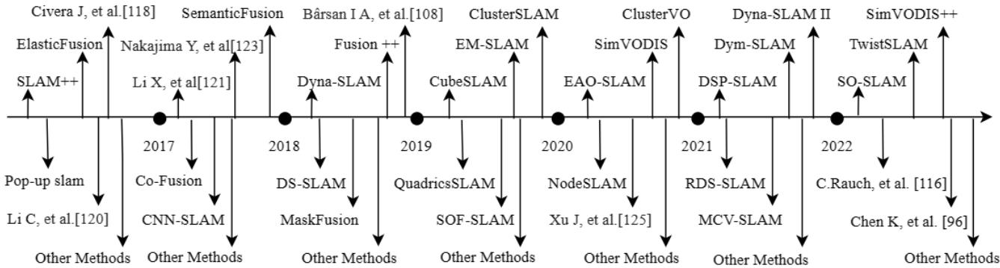
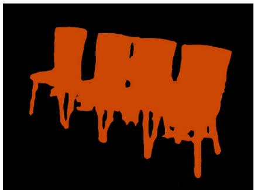

本节目标
读完你应能：① 用一条主线串起 0159–0166（surfel → 体素 → 场景图，三档粒度，四类关联，实时代价）；② 解释「语义怎么反过来帮定位」——在前端剔动态、后端加物体约束、回环用语义描述子；③ 用 2023 综述的视角评价 DL 融入 SLAM 的得与失；④ 复述本块最该记住的纠正（CRF ≠ 回环）。
和前面课程怎么接
本块 0159–0166 全部是这篇综述归纳的对象：SemanticFusion / Co-Fusion / MaskFusion / EM-Fusion / SO-SLAM 等都被它归入门类。它还是 0158 点过的「CRF = 回环」误读的源头（§V-A），本课在收束处正式了结。0153 的动态剔除、0043–0045 的 ORB-SLAM2、0147 的 SAM / DINOv2 都是语义反哺定位的上下游；下一站 0168 进入多机块，Kimera 的 DSG 会在那里以分布式形态再现。
1. 语义块的收束：一条主线
九节课走下来，语义建图块其实只讲了「地图该怎么装语义」这一件事，但答案沿着表示能力一路升级：
- 表示：surfel（0159 / 0160）→ octree / TSDF 体素（0161 / 0162）→ 动态场景图 DSG 五层（0163）；
- 粒度：逐像素语义（0159）→ 实例级（0160 / 0161）→ 全景 stuff+things（0162）；
- 关联：几何+语义硬判（0160）→ IoU / EM（0161）→ 地图参考 + 统计集成（0162 / 0166）；
- 物体模型：从稠密 / 体素（0161–0162）到紧凑椭球 / cube-quadric（0164 / 0166）；
- 代价：实时性始终是瓶颈，来源各异（CNN 降频、GPU 对象重建、检测频率）。
这篇 2023 综述（Pu、Luo 等）恰好是按「DL 融入 SLAM 的前 / 后端与回环」来系统梳理的，是给本块收束的天然透镜。
2. 语义怎么「反过来」帮定位
本块标题问的是：建语义图，到底对「定位」有什么用？答案是语义不只是「地图的装饰」，它会反哺位姿估计，在三个地方介入：
怎么看这张图：① 前端对应 0153 / 0165 的动态剔除（语义当可动先验）；② 后端对应 0164 / 0166 的物体进位姿图；③ 回环节是综述强调的「语义感知回环」方向，本块未深讲但点到了。
要记住的一句话：语义建图不是「画好看的图」，而是「让定位更准」的增值信息。
怎么看这张图：顺着四条带箭头的连线走一圈。左上「拍」、右上「分」、右下「剔」、左下「估」，最后一条箭头从「估」绕回「拍」，这就是「反哺」。注意右侧两格：静态特征（绿点）被保留、人（红块）被剔除——干净与否，直接决定左下那条轨迹会不会被拽歪。
要记住的一句话：语义与定位不是单向流水线，而是一个互相校正的闭环——这是语义 SLAM 相对「建完图再贴标签」的根本区别。
3. 综述的贡献：DL 融入 SLAM 的得与失
这篇综述把「深度学习（尤其语义分割）融入视觉 SLAM」按模块拆开：前端（特征 / 语义）、后端（鲁棒优化）、回环（语义描述子），并系统整理了动态环境方法。它给出两张关键表：
Table I：前端 DL 方法对比
横向列出各系统的语义来源网络、粒度、是否实时，是 0159–0166 各篇的横向索引。
Table II：DL vs 传统 SLAM 模块
结论很清醒：DL 在鲁棒性 / 准确性上更强，但数据量更大、实时性更弱；DXSLAM 是首个无 GPU 实时的特征法 SLAM（CPU 实时）。
这正是本块反复出现的代价账的「官方总结」：语义越强，算力越贵。YOLO-SLAM（0165）用「只删点不建模」、Kimera（0163）用「嵌入式多线程」各自在实时性上找平衡，但都未根本解决。

怎么看这张图：这是语义 SLAM 的发展时间线，把本块覆盖的 SemanticFusion、Co-Fusion、MaskFusion、EM-Fusion、SO-SLAM 等都标在轴上。它直观告诉我们：这些论文不是孤立的，而是一条沿着「粒度更细、表示更优、关联更稳」推进的时间线，正是本块主线的历史印证。
4. 粒度回顾：语义 vs 实例
综述用一张图讲清了本块最核心的粒度区分，正好收束 0159 → 0160 → 0162 的进阶：

怎么看这张图：(b) 语义分割把所有同类涂成同色（认得「是椅子」），(c) 实例分割把同类的不同个体分开（认得「第几把椅子」）。这正对应 0159 的逐像素语义与 0160 的实例级——综述用一张图把本块最关键的粒度跃迁点透了。
5. 地图表示全景对照
综述归纳的表示谱系，和本块的演进完全吻合，这里一次性对照：
surfel
SemanticFusion / Co-Fusion：表面小面片，无自由空间（0159 / 0160）。
octree / 体素 TSDF
MID / EM-Fusion、PanopticFusion：能装自由空间（0161 / 0162）。
cube / quadric
CubeSLAM、QuadricSLAM、SO-SLAM：紧凑对象参数化（0164 / 0166）。
稀疏点
DSP-SLAM 等：在 ORB-SLAM2 点上挂语义，最轻（呼应 0165）。
值得点明：本块主线「surfel → 体素 → 场景图」就是「地图表示决定能力上限」的活标本——越往后的表示，越能回答「可达性 / 物体关系 / 房间结构」这类高层问题（0163 的 DSG 是天花板）。
互动判断
2023 综述的 Table II 对「DL 融入 SLAM」给出的最主要结论是什么？
怎么看这张图：① 先横着看四格的标题，从左到右正好是这一块的演进顺序；② 再比较每一格底下两行小字——绿色的「✓」是它多出来的能力，红色的「✗」是它换不来的东西；③ 重点看第 ② 格：空格子代表「这地方什么都没有」，正是导航需要的自由空间，而面元路线（第 ① 格）根本没有这个概念；④ 最后看第 ④ 格那条虚线边，它表示「人在房间里」这层关系——这是前面三种表示都表达不了的。
要记住的一句话：地图表示决定能力上限：选了面元就等于放弃自由空间，选了体素才谈得上导航，而场景图把「能指路」这件事变成了地图自带的本事。
6. 诚实收尾：本块最该记住的纠正
⚠️ 把「CRF = 回环」这个误读正式了结
这篇 2023 综述的 §V-A 写道：SemanticFusion「employs a fully connected conditional random field (CRF) ... enabling loop detection」。这是错的。0158 与 0159 已核实：SemanticFusion 的 CRF 只用于标签空间平滑（让邻域像素更像同一类），和回环检测毫无关系。本块在此正式了结这个误读——引用综述时请勿采信，应回到原文判断。
另外诚实标注综述自身的局限（也是本块的代价账）：① 语义分割网络类别有限、算力消耗大；② 多数动态方法删除动态物体导致特征损失（这正是 0155 DynaSLAM II 要「留 + 追踪」的动机）；③ 深度可靠性影响实例重建质量。
互动判断
下面关于 SemanticFusion 的 CRF 的说法，哪个对本块结论是错的？
读完你应该能回答
- 用一条主线串起 0159–0166：表示、粒度、关联、物体模型、代价各是怎么演进的？
- 语义怎么「反过来」帮定位？在前端 / 后端 / 回环三处各起到什么作用？
- 2023 综述 Table II 对「DL 融入 SLAM」的主要结论是什么？它和本块的实时性代价账如何呼应？
- 综述 Fig.6 的「语义 vs 实例」对应本块哪两节课的粒度跃迁？
- 本块最该记住的纠正是什么（CRF 与回环）？为什么引用综述时要谨慎？